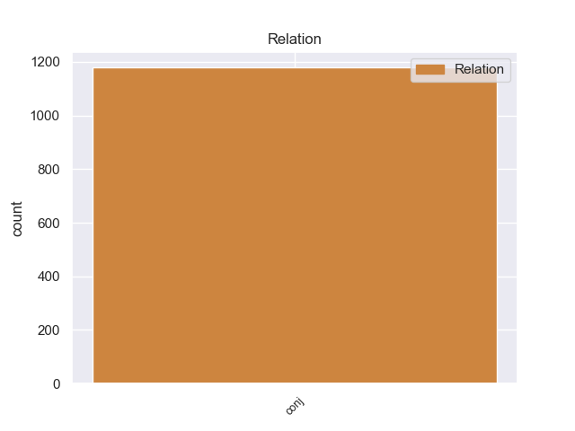
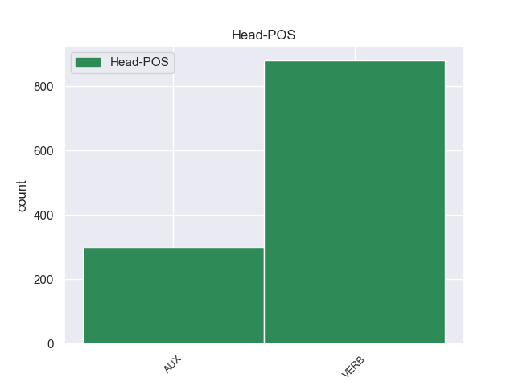
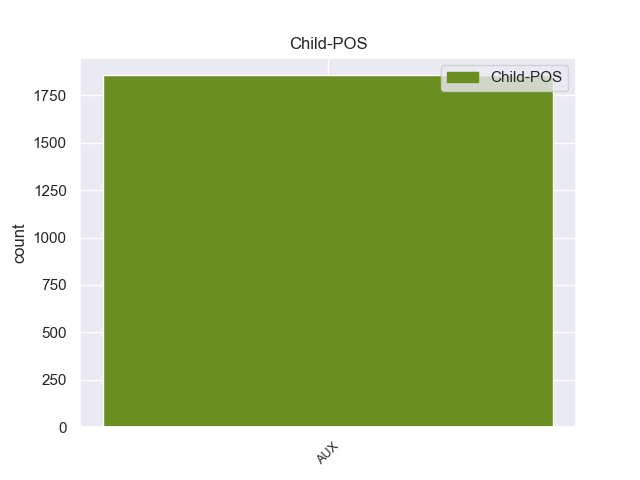

Distribution of features within this leaf



Agreement Rules sorted by frequency.
- When the dependent token is the conjunct(conj) of the head token, and the head token is VERB and the dependent token is VERB.
1 He _ _ _ _ 0 _ _ _
2 said say VERB VBD Mood=Ind|Tense=Past|VerbForm=Fin 0 _ _ _
3 it _ _ _ _ 0 _ _ _
4 was _ _ _ _ 0 _ _ _
5 the _ _ _ _ 0 _ _ _
6 same _ _ _ _ 0 _ _ _
7 tire _ _ _ _ 0 _ _ _
8 , _ _ _ _ 0 _ _ _
9 and _ _ _ _ 0 _ _ _
10 verified verify VERB VBD Mood=Ind|Tense=Past|VerbForm=Fin 2 conj 2:conj:and _
11 this _ _ _ _ 0 _ _ _
12 , _ _ _ _ 0 _ _ _
13 after _ _ _ _ 0 _ _ _
14 checking _ _ _ _ 0 _ _ _
15 both _ _ _ _ 0 _ _ _
16 the _ _ _ _ 0 _ _ _
17 actual _ _ _ _ 0 _ _ _
18 tire _ _ _ _ 0 _ _ _
19 on _ _ _ _ 0 _ _ _
20 my _ _ _ _ 0 _ _ _
21 car _ _ _ _ 0 _ _ _
22 and _ _ _ _ 0 _ _ _
23 my _ _ _ _ 0 _ _ _
24 service _ _ _ _ 0 _ _ _
25 papers _ _ _ _ 0 _ _ _
26 from _ _ _ _ 0 _ _ _
27 earlier _ _ _ _ 0 _ _ _
28 in _ _ _ _ 0 _ _ _
29 the _ _ _ _ 0 _ _ _
30 week _ _ _ _ 0 _ _ _
31 . _ _ _ _ 0 _ _ _
1 A _ _ _ _ 0 _ _ _
2 few _ _ _ _ 0 _ _ _
3 minutes _ _ _ _ 0 _ _ _
4 after _ _ _ _ 0 _ _ _
5 I _ _ _ _ 0 _ _ _
6 left _ _ _ _ 0 _ _ _
7 , _ _ _ _ 0 _ _ _
8 I _ _ _ _ 0 _ _ _
9 was be AUX VBD Mood=Ind|Number=Sing|Person=1|Tense=Past|VerbForm=Fin 0 _ _ _
10 called _ _ _ _ 0 _ _ _
11 and _ _ _ _ 0 _ _ _
12 informed inform VERB VBN Tense=Past|VerbForm=Part 9 conj 10:conj:and _
13 that _ _ _ _ 0 _ _ _
14 " _ _ _ _ 0 _ _ _
15 I _ _ _ _ 0 _ _ _
16 " _ _ _ _ 0 _ _ _
17 left _ _ _ _ 0 _ _ _
18 my _ _ _ _ 0 _ _ _
19 wheel _ _ _ _ 0 _ _ _
20 lock _ _ _ _ 0 _ _ _
21 ( _ _ _ _ 0 _ _ _
22 which _ _ _ _ 0 _ _ _
23 they _ _ _ _ 0 _ _ _
24 should _ _ _ _ 0 _ _ _
25 have _ _ _ _ 0 _ _ _
26 left _ _ _ _ 0 _ _ _
27 in _ _ _ _ 0 _ _ _
28 the _ _ _ _ 0 _ _ _
29 car _ _ _ _ 0 _ _ _
30 ) _ _ _ _ 0 _ _ _
31 . _ _ _ _ 0 _ _ _
Disagree Examples:
1 This _ _ _ _ 0 _ _ _
2 item _ _ _ _ 0 _ _ _
3 is be AUX VBZ Mood=Ind|Number=Sing|Person=3|Tense=Pres|VerbForm=Fin 0 _ _ _
4 a _ _ _ _ 0 _ _ _
5 small _ _ _ _ 0 _ _ _
6 one _ _ _ _ 0 _ _ _
7 and _ _ _ _ 0 _ _ _
8 easily _ _ _ _ 0 _ _ _
9 missed miss VERB VBN Tense=Past|VerbForm=Part 3 conj 6:conj:and SpaceAfter=No
10 . _ _ _ _ 0 _ _ _
1 These _ _ _ _ 0 _ _ _
2 links _ _ _ _ 0 _ _ _
3 present _ _ _ _ 0 _ _ _
4 the _ _ _ _ 0 _ _ _
5 many _ _ _ _ 0 _ _ _
6 viewpoints _ _ _ _ 0 _ _ _
7 that _ _ _ _ 0 _ _ _
8 existed exist VERB VBD Mood=Ind|Tense=Past|VerbForm=Fin 0 _ _ _
9 and _ _ _ _ 0 _ _ _
10 still _ _ _ _ 0 _ _ _
11 exist exist VERB VBP Mood=Ind|Tense=Pres|VerbForm=Fin 8 conj 6:acl:relcl|8:conj:and _
12 about _ _ _ _ 0 _ _ _
13 the _ _ _ _ 0 _ _ _
14 disaster _ _ _ _ 0 _ _ _
15 called _ _ _ _ 0 _ _ _
16 Chernobyl _ _ _ _ 0 _ _ _
17 : _ _ _ _ 0 _ _ _
1 Not _ _ _ _ 0 _ _ _
2 only _ _ _ _ 0 _ _ _
3 did _ _ _ _ 0 _ _ _
4 Bush _ _ _ _ 0 _ _ _
5 not _ _ _ _ 0 _ _ _
6 know _ _ _ _ 0 _ _ _
7 who _ _ _ _ 0 _ _ _
8 General _ _ _ _ 0 _ _ _
9 Pervez _ _ _ _ 0 _ _ _
10 Musharraf _ _ _ _ 0 _ _ _
11 was _ _ _ _ 0 _ _ _
12 , _ _ _ _ 0 _ _ _
13 he _ _ _ _ 0 _ _ _
14 seems seem VERB VBZ Mood=Ind|Number=Sing|Person=3|Tense=Pres|VerbForm=Fin 0 _ _ _
15 to _ _ _ _ 0 _ _ _
16 have _ _ _ _ 0 _ _ _
17 confused _ _ _ _ 0 _ _ _
18 coup _ _ _ _ 0 _ _ _
19 - _ _ _ _ 0 _ _ _
20 making _ _ _ _ 0 _ _ _
21 with _ _ _ _ 0 _ _ _
22 " _ _ _ _ 0 _ _ _
23 taking _ _ _ _ 0 _ _ _
24 office _ _ _ _ 0 _ _ _
25 , _ _ _ _ 0 _ _ _
26 " _ _ _ _ 0 _ _ _
27 and _ _ _ _ 0 _ _ _
28 moreover _ _ _ _ 0 _ _ _
29 went go VERB VBD Mood=Ind|Tense=Past|VerbForm=Fin 14 conj 14:conj:and _
30 on _ _ _ _ 0 _ _ _
31 to _ _ _ _ 0 _ _ _
32 suggest _ _ _ _ 0 _ _ _
33 that _ _ _ _ 0 _ _ _
34 the _ _ _ _ 0 _ _ _
35 overthrow _ _ _ _ 0 _ _ _
36 of _ _ _ _ 0 _ _ _
37 an _ _ _ _ 0 _ _ _
38 elected _ _ _ _ 0 _ _ _
39 prime _ _ _ _ 0 _ _ _
40 minister _ _ _ _ 0 _ _ _
41 and _ _ _ _ 0 _ _ _
42 the _ _ _ _ 0 _ _ _
43 installation _ _ _ _ 0 _ _ _
44 in _ _ _ _ 0 _ _ _
45 power _ _ _ _ 0 _ _ _
46 of _ _ _ _ 0 _ _ _
47 the _ _ _ _ 0 _ _ _
48 Pakistan _ _ _ _ 0 _ _ _
49 military _ _ _ _ 0 _ _ _
50 , _ _ _ _ 0 _ _ _
51 then _ _ _ _ 0 _ _ _
52 the _ _ _ _ 0 _ _ _
53 world _ _ _ _ 0 _ _ _
54 's _ _ _ _ 0 _ _ _
55 strongest _ _ _ _ 0 _ _ _
56 supporter _ _ _ _ 0 _ _ _
57 of _ _ _ _ 0 _ _ _
58 the _ _ _ _ 0 _ _ _
59 Taliban _ _ _ _ 0 _ _ _
60 , _ _ _ _ 0 _ _ _
61 would _ _ _ _ 0 _ _ _
62 bring _ _ _ _ 0 _ _ _
63 " _ _ _ _ 0 _ _ _
64 stability _ _ _ _ 0 _ _ _
65 ! _ _ _ _ 0 _ _ _
66 " _ _ _ _ 0 _ _ _
1 The _ _ _ _ 0 _ _ _
2 interim _ _ _ _ 0 _ _ _
3 government _ _ _ _ 0 _ _ _
4 has _ _ _ _ 0 _ _ _
5 promised promise VERB VBN Tense=Past|VerbForm=Part 0 _ _ _
6 security _ _ _ _ 0 _ _ _
7 measures _ _ _ _ 0 _ _ _
8 that _ _ _ _ 0 _ _ _
9 would _ _ _ _ 0 _ _ _
10 reduce _ _ _ _ 0 _ _ _
11 the _ _ _ _ 0 _ _ _
12 violence _ _ _ _ 0 _ _ _
13 on _ _ _ _ 0 _ _ _
14 the _ _ _ _ 0 _ _ _
15 day _ _ _ _ 0 _ _ _
16 of _ _ _ _ 0 _ _ _
17 elections _ _ _ _ 0 _ _ _
18 , _ _ _ _ 0 _ _ _
19 but _ _ _ _ 0 _ _ _
20 I _ _ _ _ 0 _ _ _
21 fail fail VERB VBP Mood=Ind|Tense=Pres|VerbForm=Fin 5 conj 5:conj:but _
22 to _ _ _ _ 0 _ _ _
23 see _ _ _ _ 0 _ _ _
24 how _ _ _ _ 0 _ _ _
25 they _ _ _ _ 0 _ _ _
26 will _ _ _ _ 0 _ _ _
27 be _ _ _ _ 0 _ _ _
28 able _ _ _ _ 0 _ _ _
29 to _ _ _ _ 0 _ _ _
30 protect _ _ _ _ 0 _ _ _
31 all _ _ _ _ 0 _ _ _
32 5,000 _ _ _ _ 0 _ _ _
33 ( _ _ _ _ 0 _ _ _
34 or _ _ _ _ 0 _ _ _
35 so _ _ _ _ 0 _ _ _
36 ) _ _ _ _ 0 _ _ _
37 balloting _ _ _ _ 0 _ _ _
38 centres _ _ _ _ 0 _ _ _
39 . _ _ _ _ 0 _ _ _
1 Both _ _ _ _ 0 _ _ _
2 have _ _ _ _ 0 _ _ _
3 shared share VERB VBN Tense=Past|VerbForm=Part 0 _ _ _
4 this _ _ _ _ 0 _ _ _
5 country _ _ _ _ 0 _ _ _
6 for _ _ _ _ 0 _ _ _
7 the _ _ _ _ 0 _ _ _
8 last _ _ _ _ 0 _ _ _
9 14 _ _ _ _ 0 _ _ _
10 centuries _ _ _ _ 0 _ _ _
11 and _ _ _ _ 0 _ _ _
12 there _ _ _ _ 0 _ _ _
13 is be VERB VBZ Mood=Ind|Number=Sing|Person=3|Tense=Pres|VerbForm=Fin 3 conj 3:conj:and _
14 no _ _ _ _ 0 _ _ _
15 possible _ _ _ _ 0 _ _ _
16 way _ _ _ _ 0 _ _ _
17 that _ _ _ _ 0 _ _ _
18 one _ _ _ _ 0 _ _ _
19 can _ _ _ _ 0 _ _ _
20 live _ _ _ _ 0 _ _ _
21 without _ _ _ _ 0 _ _ _
22 the _ _ _ _ 0 _ _ _
23 other _ _ _ _ 0 _ _ _
24 . _ _ _ _ 0 _ _ _